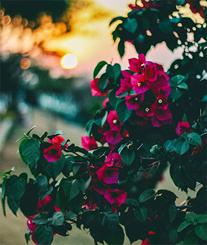
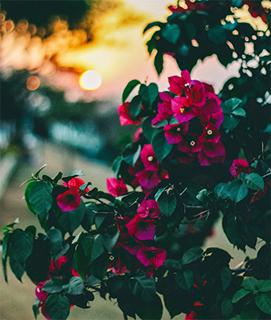

Flora y Fauna silvestre
Nuestro territorio entraña una enorme responsabilidad:
una alta proporcion de sus especies son endémicas, es decir,
solo existen en nuestro país.
EXPLORADOR DE ESPECIES FAUNA

Águila calva
Búho
Mono
EXPLORADOR DE ESPECIES FLORA
 

Rosa
Framboyán
Bugambilia
¡PAREMOS LA EXTINCIÓN!
 Imagina un animal que parece un pequeño dragon acuático. con branquias peludas en los lados de su cabeza, una carita simpatica y un cuerpo parecido al de una salamandra. Ese es el ajolote, un anfibio único que vive solo en México.
Su nombre científico es Ambystoma Mexicanum, pero todos lo conocen como ajolote.
Imagina un animal que parece un pequeño dragon acuático. con branquias peludas en los lados de su cabeza, una carita simpatica y un cuerpo parecido al de una salamandra. Ese es el ajolote, un anfibio único que vive solo en México.
Su nombre científico es Ambystoma Mexicanum, pero todos lo conocen como ajolote.
Proteger al ajolote no es solo salvar una especie. Es salvar un pedacito del planeta, de nuestra historia y nuestro futuro. Tú puedes ser parte de ese cambio.
Porque incluso las acciones peque;as, como cuidar el agua o hablar del ajolote con tus amigos, familia o personas conocidas pueden tener un gran imacto.
Y para salvar al ajolote de la extinción, es crucial proteger y restaurar su hábitat en el lago de Xochimilco, México, donde es endémico. Esto implica reducir la contaminación, controlar especies invasoras como la carpa y tilapia, y promover la conservación de las chinampas, un sistema de agricultura sostenible que también funciona como refugio para los ajolotes. Además, se necesita concienciar al público sobre la importancia del ajolote y su hábitat, y apoyar las iniciativas de conservación y reproducción en cautiverio para su posterior liberación en el medio silvestre.